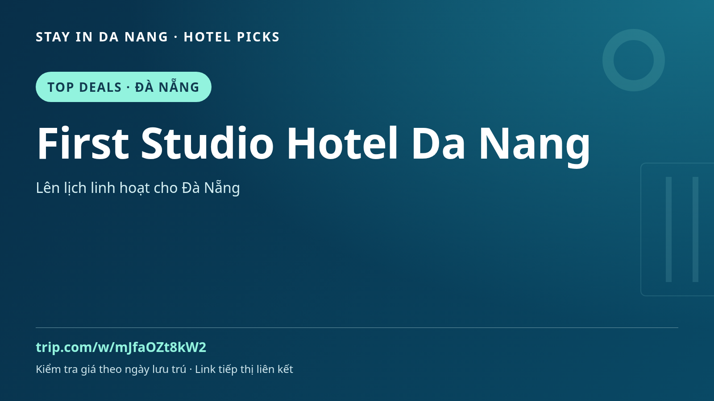

First Studio Hotel Da Nang | Gợi ý lưu trú tại Đà Nẵng, Việt Nam
Bạn đang lên kế hoạch đi Đà Nẵng? Hãy đưa First Studio Hotel Da Nang vào danh sách so sánh chỗ ở cho chuyến khám phá miền Trung, kết hợp ẩm thực địa phương, điểm tham quan văn hóa và các chuyến đi trong ngày.

Cân nhắc First Studio Hotel Da Nang theo nhu cầu của bạn
Bắt đầu từ vị trí khách sạn và xem mức độ phù hợp với lịch trình. Đọc đánh giá gần đây của khách, ảnh phòng, điều kiện hủy, lựa chọn bữa sáng và kết nối giao thông trước khi đặt. Tiện ích, giá và tình trạng chỗ có thể khác theo ngày hoặc hạng phòng; hãy xác nhận trên trang đặt dịch vụ thay vì suy ra từ tên hoặc ảnh quảng cáo.
Gợi ý khám phá quanh Đà Nẵng
Dành thời gian cho bãi biển Mỹ Khê, khu vực sông Hàn và một chuyến riêng tới Hội An nếu phù hợp. Những gợi ý này dành cho lịch trình du lịch, không có nghĩa khách sạn nằm sát các điểm đó. So sánh ngày đi, lên kế hoạch xe sân bay hoặc phương tiện địa phương và để khoảng nghỉ giữa các hoạt động để chuyến đi thoải mái hơn.
Trước khi đặt phòng
- Kiểm tra địa chỉ chính xác và phương án di chuyển theo lịch trình của bạn.
- So sánh hạng phòng, số khách, bữa ăn, thuế và điều kiện hủy.
- Xem tình trạng phòng và giá cuối cùng theo ngày lưu trú thực tế.